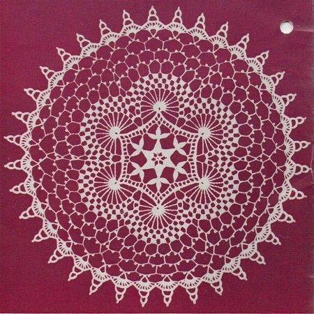

Swirls Doily Pattern
MATERIALS:
DAISY MERCERIZED CROCHET COTTON, Art. 65: 1/2-skein White, Size 20; or LILY MERCERIZED CROCHET COTTON, Art. 36: 1/2-Big Ball White, Size 20; or LILY MERCROCRET MERCERIZED COTTON, Art. 161: 1-ball White, Size 20. Work tightly for best results.
No. 12 Steel Crochet Hook.
SIZE - 12 1/2 inches.
1st Rnd: Starting in center, ch 3, 6 sc in 2d ch from hook, join to 1st sc.
2nd Rnd: Ch 10, dc in next sc, (ch 7, dc in next sc) 4 times, ch 4, join with dc in 3d st of ch-10.
3rd Rnd: 6 dc in same st, sc in next ch-7 lp, (6 dc in back lp of next dc, sc in next lp) 4 times, 6 dc in next dc, join with sl st in 1st 2 dc.
4th Rnd: ** Ch 16, * sk 1 ch, sc in next ch, hdc in next ch, dc in next ch, holding back the last lp of each dc make dc in next 2 ch, yarn over and draw thru all 3 lps on hook at same time (Cluster-dec), dc in next ch, hdc in next ch, sl st in next ch, * (ch 9, repeat from * to *) twice, sk 3 petals, sl st in next ch, sc in next ch, hdc in next ch, (dc in next 2 ch) made into a dec, tr in next ch, 2 tr in next (end) ch, sk 4 dc, sl st in next 3 sts; repeat from ** around; join and fasten off.
5th Rnd: Attach to 1st petal of 1 group, * ch 10, (dc, ch 5, dc) in next petal, ch 10, sc in next petal, ch 3, sc in 1st petal of next group; repeat from * around; join, sl st in 1st 2 ch of next lp.
6th Rnd: Ch 5, sk 2 ch, dc in next ch, (ch 2, sk 2 ch, dc in next st) 3 times, * ch 5, dc in same st with last dc, (ch 2, sk 2 ch, dc in next st) 4 times, ch 2, dc in 2d st of next ch-3 sp, ch 2, dc in 2d st of next ch-10, (ch 2, sk 2 ch. dc in next st) 4 times; repeat from * around; join to 3d st of 1st ch-5.
7th Rnd: Ch 1, sc in same st, (2 sc in next sp, sc in next dc) 4 times, * 3 sc in next ch-5 sp, ch 8, turn, sl st in 8th ch from hook to form ring, ch 1, turn, (1 sc, 1 hdc, 14 dc, 1 hdc and 1 sc) in ring, 3 sc in bal. of ch-5 sp, sc in next dc, (2 sc in next sp, sc in next dc) 10 times; repeat from * around; join to 1st sc, ch 1, sc in same sc.
8th Rnd: * Ch 4, long tr (yarn over 5 times and work off in twos as for tr tr) in hdc (2d st) on next ring, (ch 4, tr tr in next st) 13 times, ch 4, long tr in next st, ch 4, sk 15 sc, sc in next 2 sc, (sk 1 sc, sc in next sc) twice, sc in next sc; repeat from * around; join to 1st sc, sl st to 2d ch-4 sp.
9th Rnd: Ch 3, dc in same sp, * (ch 4, 2 dc in next sp) 13 times, 2 dc in 2d sp on next circle; repeat from * around; join to 1st ch-3. sl st to 2d ch-4 sp.
10th Rnd: Ch 3, 2 dc in same sp, * (ch 4, 3 dc in next sp) 10 times, 3 dc in 2d ch-4 sp on next circle; repeat from * around, join to 1st ch-3, sl st to next ch-4 sp.
11th Rnd: Ch 3, dc in same sp, * (ch 4, 4 dc in next sp) 8 times, ch 4, 2 dc in next sp, 2 dc in 1st ch-4 sp on next circle; repeat from * around, join to 1st ch-3, sl st to next ch-4 sp.
12th Rnd: Ch 12, sl st in 5th ch from hook for a p (p-picot), ch 8, p, ch 3, tr in next sp, (ch 7, p, ch 8, p, ch 3, tr in next sp) 7 times, * tr in 1st sp on next circle, (ch 7, p, ch 8, p, ch 3, tr in next sp) 8 times; repeat from * around, join to 5th st of 1st lp, sl st to center st between next 2 ps.
13th Rnd: Ch 12, p, ch 8, p, ch 3, tr in next p-lp, (ch 7, p, ch 8, p, ch 3, tr in next p-lp) 6 times, * tr in next p-lp, (ch 7, p, ch 8, p, ch 3, tr in next p-lp) 7 times; repeat from * around; join to 5th st of 1st lp, sl st to center of same lp.
14th Rnd: Ch 13, p, ch 9, p, ch 4, tr in next p-lp, (ch 8, p, ch 9, p, ch 4, tr in next lp) 5 times, * tr in next lp, (ch 8, p, ch 9, p, ch 4, tr in next lp) 6 times; repeat from * around, join to 5th st of 1st lp, sl st to center st of same lp.
15 Rnd: Ch 10, tr in same st, * ch 9, (tr, ch 5, tr) in center st of next lp; repeat from * around; join with ch 4, tr in 5th st of 1st ch-10.
16th Rnd: * (Ch 1, tr) 8 times in next ch-5 sp, ch 1, sc in next ch-9 sp; repeat from * around.
17th Rnd: * 1 sc in next ch-1 sp, (2 sc in next sp) 5 times, ch 10, turn, sk 5 sc, sl st in next sc, ch 1, turn, 8 sc in 2/3rds of lp, ch 8, turn, sk 3 sc, sl st in next sc, ch 1, turn, 5 sc in half of lp, ch 5, sl st in last sc for a p, 5 sc and 1 sl st in bal. of lp, ch 1, 4 sc and 1 sl st in bal. of next lp, ch 1, (2 sc in next sp) twice, 1 sc in next (end) sp, repeat from * around; join and fasten off. Stretch and pin doily right-side-down in a true circle. Steam and press dry thru a cloth.
HOME